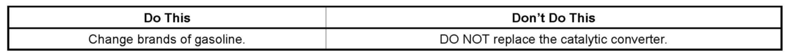

Exhaust System - Sulfur Odor Explanation
INFORMATIONBulletin No.: 09-06-05-001
Date: January 30, 2009
Subject:
Information on Sulfur Odor from Exhaust
Models:
2007-2010 GM Passenger Cars and Light Duty Trucks (Including Saturn)
2007-2010 HUMMER H2, H3
2007-2010 Saab 9-7X
with Gasoline-Powered Engines
Important:
This bulletin is not applicable to vehicles operating in Canada on Canadian sourced fuels. Canadian regulations limit the amount of sulfur in gasoline to 80 PPM or less for all gasoline marketed in Canada with no exemptions.
Federal regulations limit the amount of sulfur in gasoline to 80 PPM (some states have lower limits; for example, California's limit is 30
PPM). The federal exception to this rule is an allowance for qualifying small refineries that permits up to 450 PPM until January 1, 2011. Sulfur odor in exhaust from vehicles equipped with gasoline engines is caused by excess sulfur in the gasoline and it cannot be eliminated unless the source of the sulfur is eliminated.
Important:
Replacement of catalytic converters for this condition is not an appropriate repair and will not correct the condition by itself.

Customers with vehicles that exhibit this condition should be advised of the information in this bulletin and be asked to switch the brand of gasoline that they are using. In most cases, this will result in elimination of the sulfur odor by the time one tank full of gasoline is consumed if the gasoline that was added is within the 80 PPM federal limit.
In order for the odor to be eliminated. two things must occur. First, the gasoline added to the vehicle must be at or below the federal 80 PPM limit. Secondly, the vehicle must have run long enough to have consumed one tank of fuel containing a sulfur content of 80 PPM or less.
Although there is no way for a dealership to easily measure the amount of sulfur in gasoline, it's a good practice when asked for a recommended brand of gasoline to recommend any of the Top Tier Detergent Gasoline Brands. Although Top Tier brands have not demonstrated that they contain a lower sulfur content than other brands, their detergent additive package makes them a preferred choice when choosing a brand of gasoline for your vehicle. A complete list of Top Tier Brands can be found in Corporate Bulletin Number 04-06-04-047H (in Canada, refer to Corporate Bulletin Number 05-06-04-022E) or by accessing the website www.toptiergas.com.

Disclaimer